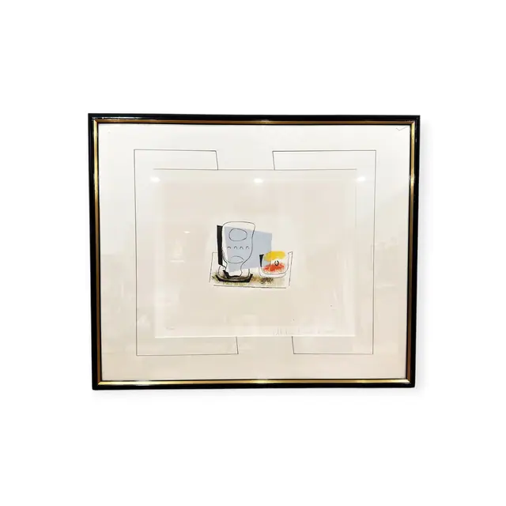
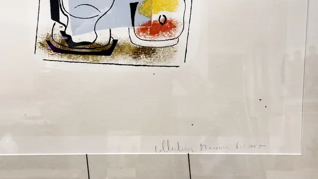
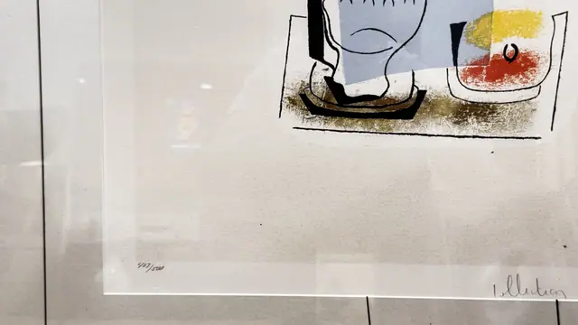
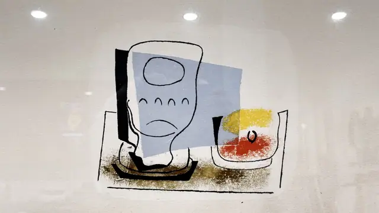
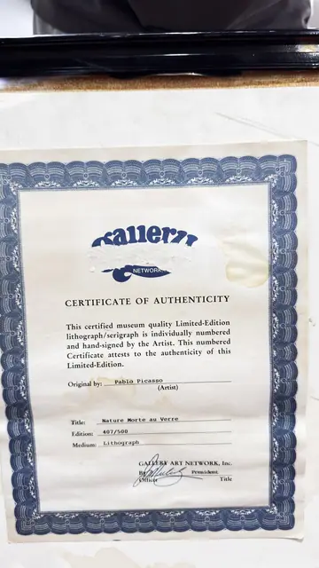

Paintings & Prints
Picasso Nature Morte au Verre Lithograph, Pablo Picasso, Numbered Edition, Framed
Pablo Picasso · late 20th century posthumous edition
Price Upon Request





About the Item
Pablo Picasso. A very small, spare image floats at the centre of a large sheet: a pale grey-blue glass or jug drawn in a few decisive contours stands beside a shallow dish holding a yellow and orange fruit, all resting on a black and ochre scumbled table plane. The surrounding paper is left almost entirely bare, and the work is presented on a double French-style mat ruled with fine ink lines, in a slim black frame with a gold inner edge. Medium: colour lithograph on paper. Edition: 407/500. Accompanied by a certificate: Certificate of Authenticity stating 'This certified museum quality Limited-Edition lithograph/serigraph is individually numbered and hand-signed by the Artist'; Original by: Pablo Picasso (Artist); Title: Nature Morte au Verre; Edition: 407/500; Medium: Lithograph; signed by an officer, President. Inscribed on the reverse or mount: 407/500 (pencil, lower left of the sheet); Collection Marina Picasso (pencil, lower right of the sheet). Condition: Certificate is water-stained and toned along the lower edge. The print itself shows no foxing or tears; some glass glare in the photographs.
Details
- Creator:
- Pablo Picasso
- Creation Year:
- late 20th century posthumous edition
- Dimensions:
- Height: 30.2 in (76.71 cm)
Width: 35.9 in (91.19 cm)
outside of frame - Medium:
- colour lithograph on paper
- Edition:
- 407/500
- Period:
- 20Th
- Condition:
- Offered in the condition shown in the photographs.
- Reference Number:
- VO-263
- Documentation:
- Certificate of Authenticity stating 'This certified museum quality Limited-Edition lithograph/serigraph is individually numbered and hand-signed by the Artist'; Original by: Pablo Picasso (Artist); Title: Nature Morte au Verre; Edition: 407/500; Medium: Lithograph; signed by an officer, President.
- Gallery Location:
- Gallery Art Network, Inc. (logo reads 'Gallery Network')